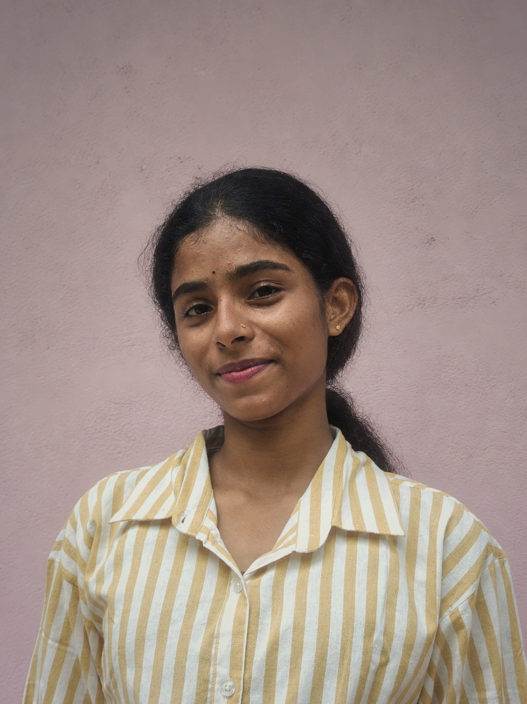

P Anusha
email:anushaparpunja2006@gmail.com • +91 8951024799 • https://www.linkedin.com/in/p anusha

CAREER OBJECTIVE
To obtain an opportunity where I can apply my technical knowledge, improve my skills and contribute to the growth of an organization.
EDUCATION
Bachelor of Engineering - Computer Science
2024-2028
Vivekananda college of Engg & Technology Puttur
CGPA: 8.5
Pre-University Course (PUC)
2024
PU college puttur
Percentage: 90%
SSLC
2022
St Philomena Aided High School Puttur
Percentage: 90%
PROJECTS
1.Smart Feedback collection System- Developed a web-based feedback management platform. Implemented authentication, feedback submission, and notifications.
Technologies Used:
- HTML
- CSS
- JavaScript
- MongoDB
- Developed a platform for online learning. Provided easy access to educational materials and resources.
Technologies Used:
- HTML
- CSS
- Javascript
- MongoDB
Certifications
- Certification 1: Introduction to Cybersecurity-Cisco Networking Academy.
- Certification 2: Introduction to Generative AI Studio-Simplilearn.
- Certification 3: Java Programming for Beginners-Simplilearn .
Workshops Attended
- AI for Students:Build Your Own Generative AI Model-NXT WAVE.
- Ai and Future Employment.